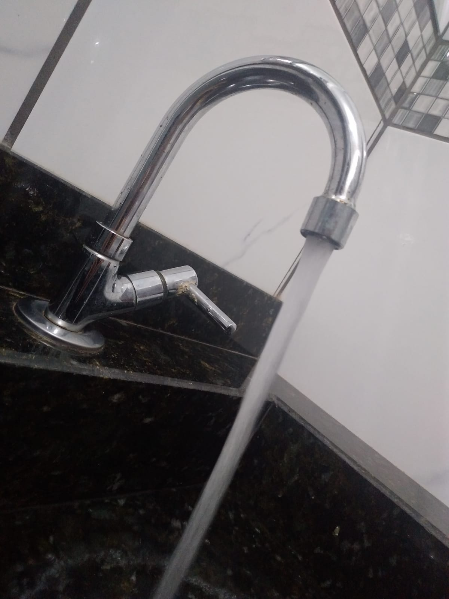
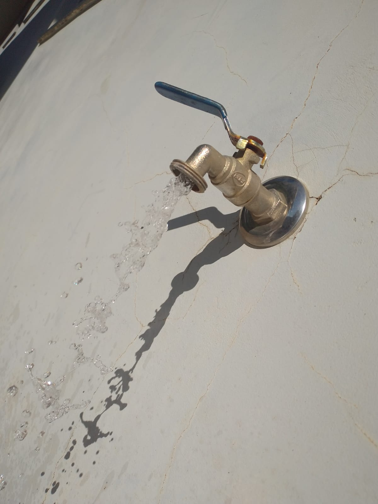
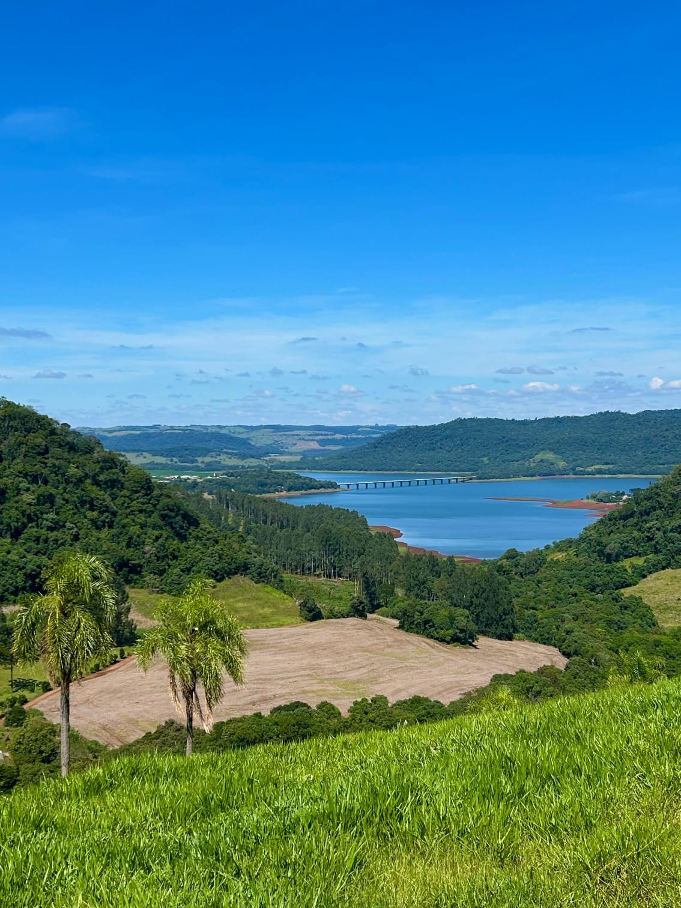

A água é um dos recursos naturais mais importantes para a produção agrícola. Ela é essencial para o crescimento das plantas, a manutenção dos solos e o bom desempenho das colheitas. Sem irrigação adequada, muitas culturas não se desenvolvem de maneira eficiente, principalmente em regiões com baixa precipitação.
O uso racional da água no campo é uma prática fundamental para garantir a sustentabilidade da produção. Sistemas de irrigação modernos, como o gotejamento e a microaspersão, permitem maior eficiência no uso da água, evitando desperdícios e contribuindo para a preservação dos mananciais.
Além disso, a recuperação de nascentes, a proteção de matas ciliares e o manejo correto do solo são estratégias que ajudam a manter a disponibilidade hídrica nas propriedades rurais. O equilíbrio entre produção agrícola e preservação da água é um desafio que envolve tecnologia, educação ambiental e políticas públicas eficazes.
Garantir o acesso à água de qualidade no campo é investir na segurança alimentar, no desenvolvimento rural e na saúde dos ecossistemas.



A água é um recurso essencial para a vida e tem papel fundamental na sustentabilidade das atividades rurais. No meio rural, ela é indispensável não apenas para a produção agrícola, mas também para a manutenção do equilíbrio ambiental e a qualidade de vida das comunidades locais. O uso consciente e eficiente da água é uma prioridade para garantir a segurança hídrica, especialmente em regiões onde a escassez pode comprometer a produção e a sobrevivência. A gestão adequada da água contribui para a conservação do solo, o crescimento saudável das culturas e o bem-estar dos animais, além de favorecer práticas sustentáveis que preservam o meio ambiente para as futuras gerações.
| Uso | Descrição | Importância | Práticas Sustentáveis |
|---|---|---|---|
| Irrigação | Fornecimento de água para cultivos agrícolas. | Essencial para aumentar a produtividade e garantir colheitas em períodos secos. | Irrigação por gotejamento, captação de água da chuva. |
| Consumo animal | Água para bebedouros e criação de animais. | Fundamental para saúde e crescimento do rebanho. | Reservatórios eficientes e proteção das fontes hídricas. |
| Uso doméstico | Água para consumo e uso das famílias rurais. | Garante qualidade de vida e higiene nas comunidades. | Tratamento de água e captação sustentável. |
| Conservação ambiental | Manutenção de nascentes, rios e áreas verdes. | Preserva a biodiversidade e os recursos naturais. | Reflorestamento e proteção das margens dos cursos d'água. |
"A água é o que mantém nossa terra viva. Sem ela, não conseguimos produzir, nem cuidar do nosso gado. Por isso, preservar as nascentes e usar a água com consciência é fundamental para nossa sobrevivência."
"Moro na cidade, mas entendo que a água no campo é essencial para alimentar a todos. Precisamos apoiar práticas sustentáveis que garantam a água limpa e abundante para o campo e para as futuras gerações."
A água é fundamental para o crescimento das plantas, irrigação dos cultivos e manutenção da saúde do solo. Sem água suficiente e de qualidade, a produtividade agrícola diminui e pode comprometer a segurança alimentar.
Os sistemas de irrigação por gotejamento e microaspersão são os mais eficientes, pois aplicam a água diretamente na raiz das plantas, reduzindo desperdícios e aumentando o rendimento da irrigação.
Conservar a água no campo ajuda a manter os recursos naturais, evita a degradação dos rios e nascentes e garante a disponibilidade para as futuras gerações, promovendo um equilíbrio entre produção e meio ambiente.
Sensores de umidade do solo, estações meteorológicas e sistemas automatizados de irrigação são algumas das tecnologias que auxiliam o manejo eficiente da água, reduzindo o consumo e aumentando a produtividade.
Referência: UFSM - O uso da água na agricultura